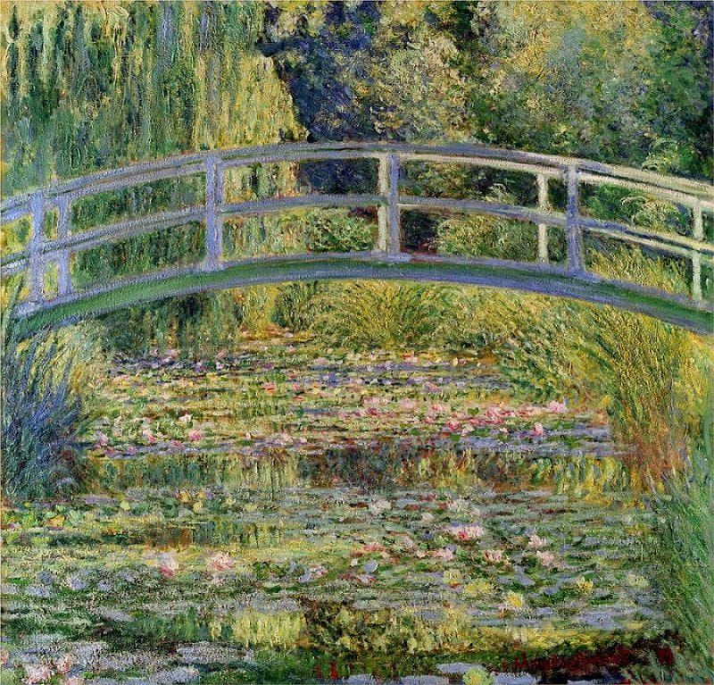
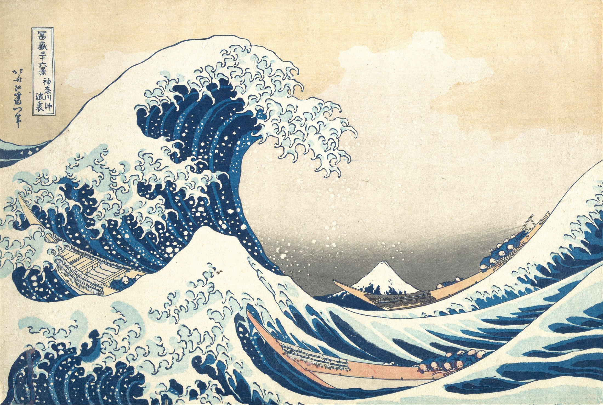
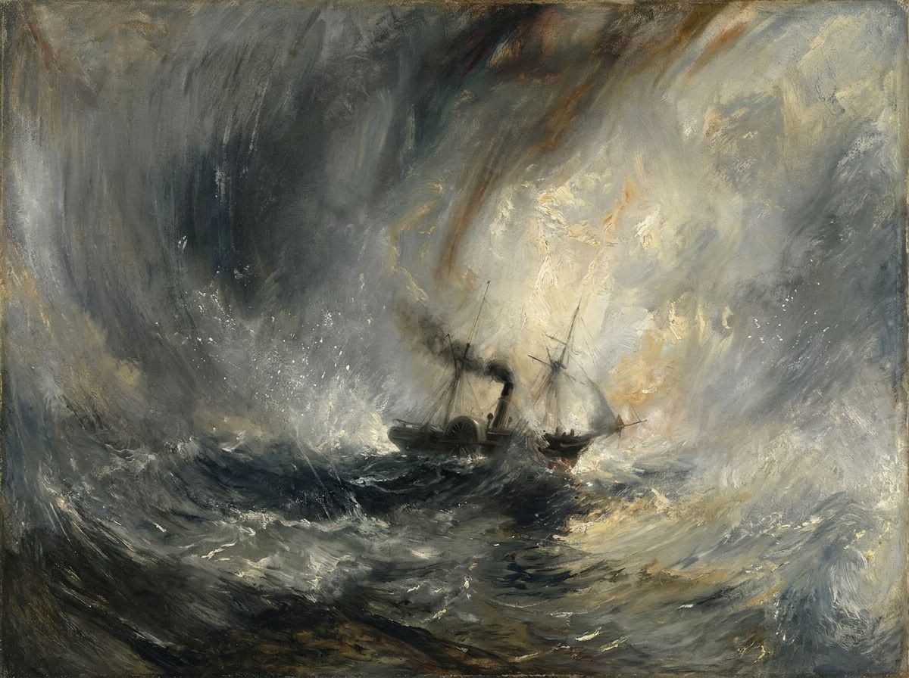
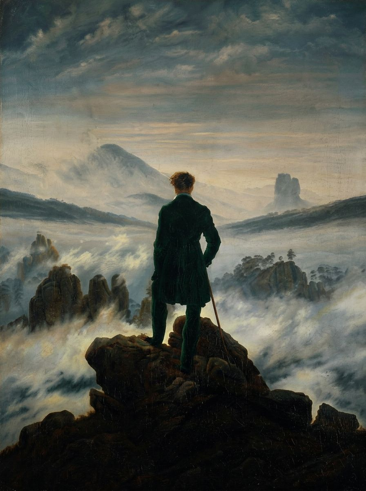

יחידות / 02
יחידה 02
טבע כמקור השראה
דפוס · אור · הגדלה · נשגב

מדפוסים מיקרוסקופיים עד נוף עצום, התלמידים מגלים כיצד העולם הטבעי הניע אמנים לאורך דורות.
6 שיעורים + פרויקט מסכם
- השראה
- התבוננות
- רעיון
- יצירה
מקורות השראה ורקע על האמנים




גישות
- ציור התבוננות
- דפוס וגאומטריה
- נוף
- לימוד בוטני
- צילום
השיעורים
-
2.1
דפוסים בטבע ובאמנות
לזהות מבנים חוזרים בטבע ולראות אותם כשפה חזותית
על השיעור
התלמידים מתבוננים בדפוסים טבעיים (ספירלות, פרקטלים, תבניות חוזרות) ויוצרים מוטיב חוזר משלהם בהשראת עצם טבעי.
45 דקות לשיעור← -
2.2
מונה והאימפרסיוניסטים
כיצד לכידת האור והאווירה שינתה את האמנות לנצח
על השיעור
לימוד סדרת גדישי השחת של מונה כשיעור בהתבוננות, אותו נושא, שעות שונות ביום, ציורים שונים לחלוטין. התלמידים יוצרים שתי עבודות של אותה סצנה.
50 דקות לשיעור← -
2.3
ג׳ורג׳יה אוקיף, הגדלה
להתקרב. מאוד קרוב. מה משתנה?
על השיעור
התלמידים בוחרים עצם טבעי קטן ומציירים אותו בהגדלה קיצונית, מגלים שקנה המידה משנה משמעות, ופרט הופך לאבסטרקציה.
55 דקות לשיעור← -
2.4
אדם מול טבע, הנשגב
יש דברים שגדולים מכם. פרידריך, טרנר, והמפגש.
על השיעור
התלמידים בוחנים את מושג הנשגב הרומנטי, טבע כמשהו עצום ומכריע. בהשוואת הדמויות הבודדות של פרידריך לסערות הסוחפות של טרנר, הם מציירים מרחב גדול עם אלמנט קטן בפנים ומרחו כיצד המיקום משנה את התחושה.
45 דקות לשיעור← -
2.5
טבע באמנות לא-מערבית
להבין דרכי הסתכלות שונות על טבע מעבר למסורת המערבית
על השיעור
התלמידים משווים כיצד תרבויות שונות מייצגות את העולם הטבעי ויוצרים עבודה המשלבת שתי מסורות חזותיות בתגובה אישית לטבע.
50 דקות בפיתוח -
2.6
✦ העולם הטבעי שלי פרויקט מסכםפרויקט מסכם
פרויקט יחידה סופי, יצירת אמנות מקורית המגיבה לקשר האישי שלך עם הטבע
על השיעור
התלמידים בוחרים כל מקור השראה טבעי ויוצרים יצירת אמנות אישית המדגימה מיומנויות ומושגים מכל היחידה.
60+ דקות בפיתוח